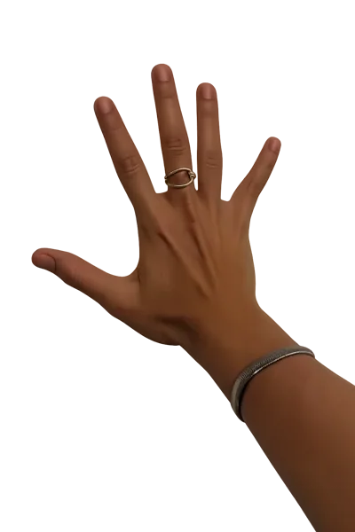

50
ΓΙΑΓΙΑ_OS v8.0
♪
ΖΩΝΤΑΝΑ · ΓΙΑΓΙΑ
ΔΕΙΞΕ ΤΟ ΧΕΡΙ ΣΟΥ
SHOW YOUR HAND
Αλέξανδρος Τουραμάνης · Alexandros Touramanis
ΤΑ ΞΟΡΚΙΑ ΤΗΣ ΓΙΑΓΙΑΣ
YIAYIA'S SPELLS
Δοκίμασε το καθένα
·
Try each one

ΓΙΑΓΙΑ CONFIG
Decay/s
Heal/s
Cast/s
Threat gap s
Calm visuals (no pulsing)
End session
Crash
H to close · keys 1–4 hold gestures